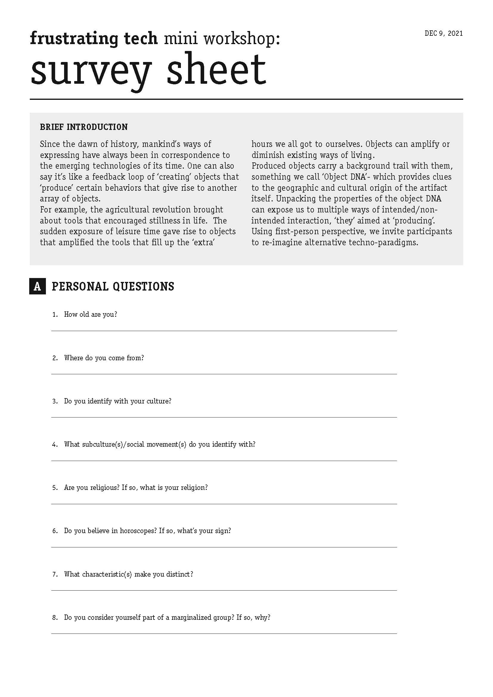
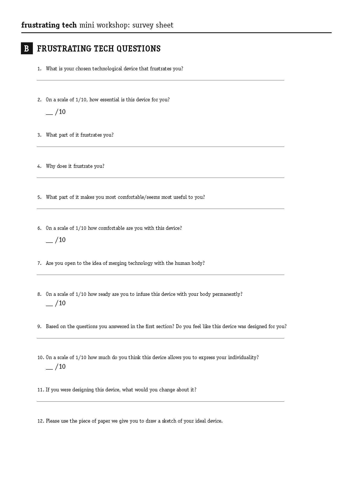
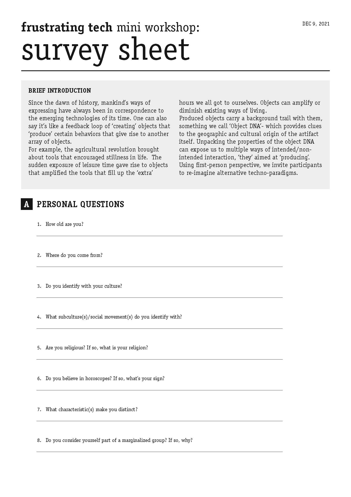
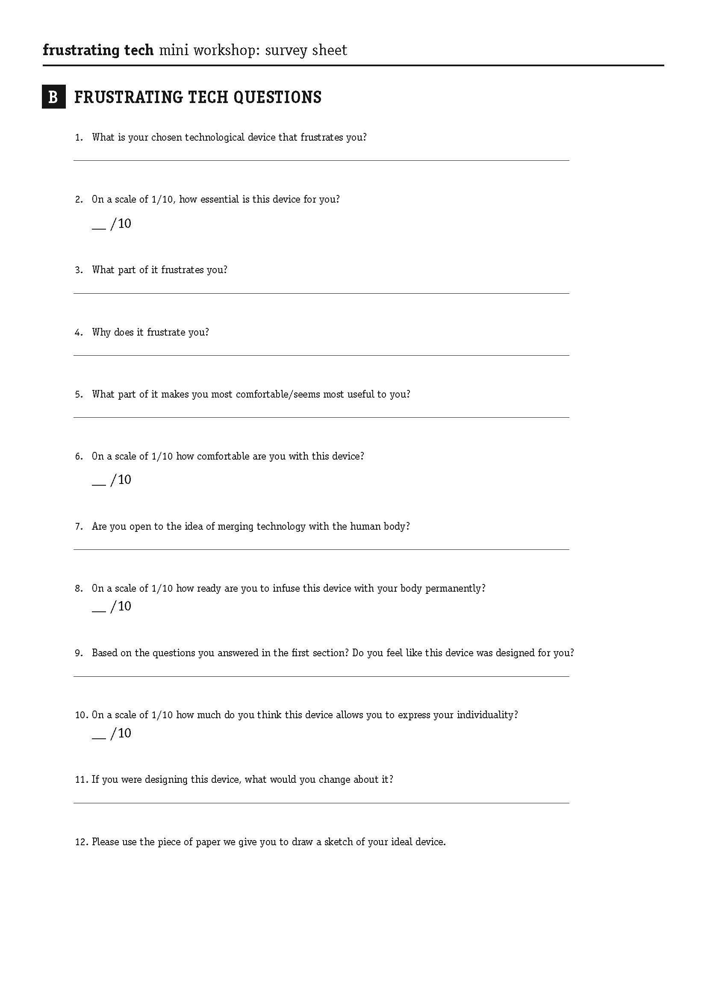

🗓 9 December 2021

During our Community Engagement course, we found a Repair Party that was hosted by ... that took place over a weekend in Sant Marti. We decided to go with a broken speaker and use this event as a starting point. We showed up at the repair party and signed up to sit with a volunteer that would help us fix the speaker. Speaking to the volunteer as he took apart the speaker, we learned a lot of interesting information about obsolescence, big tech, his perspectives on these topics, and the structure of repair parties. The speaker was fixed, but more importantly, we gained some insight and connection with the community.
With this experience in hand, we planned our design intervention around the theme of a repair party. Instead of repairing an existing device back to its original condition and function, we decided to reexamine a device's functionality in relation to the user and then enable the user to re-pair the device to themselves. This "Re-pair Party" consisted of three parts or activities. The first part was a survey with a series of questions that prompted the participant to reflect on their identity and the device they brought to re-pair. Secondly, reflecting on the answers from the survey, we aksed the participants to imagine, draw, and craft a new device that would be better suited for them. For the crafting part, we prepared a variety of simple materials that provided options to build with. Lastly, we asked the participant to embody the use of the new built device through a series of acting exercises. The use was prompted to act with the object and then as the object with a partner.
The outcome of this workshop was satisfactory. As expected, we recieved some outputs that we could not have imagined or created. And at the same time, a lot of the human-machine frustrations were consistent and relatable across participants. A difficulty we came across was the disconect and awkardness of the participants in the embodiment activity. Because we were asking participants to do something imaginary and physical, it created some barriers that we weren't able to overcome in the short amount of time. After synthesizing our outcomes, we decided that adding more structure to this final process to match the familiarity of previous activities (survey and crafting) would help the participant ease in and feel comfortable, and thus produce better results.


Design Intervention: "Re-pair Party"
Our collective interests within the meta-human group span accross the spectrum of human-technology relationships including emotional tech, soft robotics, data privacy, phygital identities, and interfaces. With several days of discussion regarding the intervention, we came upon a common interest of investigating obsolescence and relevance of technological devices in relation to our personal identities. We all used technological devices, but felt that aspects of these devices were not fitting for our individual ...During our Community Engagement course, we found a Repair Party that was hosted by ... that took place over a weekend in Sant Marti. We decided to go with a broken speaker and use this event as a starting point. We showed up at the repair party and signed up to sit with a volunteer that would help us fix the speaker. Speaking to the volunteer as he took apart the speaker, we learned a lot of interesting information about obsolescence, big tech, his perspectives on these topics, and the structure of repair parties. The speaker was fixed, but more importantly, we gained some insight and connection with the community.
With this experience in hand, we planned our design intervention around the theme of a repair party. Instead of repairing an existing device back to its original condition and function, we decided to reexamine a device's functionality in relation to the user and then enable the user to re-pair the device to themselves. This "Re-pair Party" consisted of three parts or activities. The first part was a survey with a series of questions that prompted the participant to reflect on their identity and the device they brought to re-pair. Secondly, reflecting on the answers from the survey, we aksed the participants to imagine, draw, and craft a new device that would be better suited for them. For the crafting part, we prepared a variety of simple materials that provided options to build with. Lastly, we asked the participant to embody the use of the new built device through a series of acting exercises. The use was prompted to act with the object and then as the object with a partner.
The outcome of this workshop was satisfactory. As expected, we recieved some outputs that we could not have imagined or created. And at the same time, a lot of the human-machine frustrations were consistent and relatable across participants. A difficulty we came across was the disconect and awkardness of the participants in the embodiment activity. Because we were asking participants to do something imaginary and physical, it created some barriers that we weren't able to overcome in the short amount of time. After synthesizing our outcomes, we decided that adding more structure to this final process to match the familiarity of previous activities (survey and crafting) would help the participant ease in and feel comfortable, and thus produce better results.

